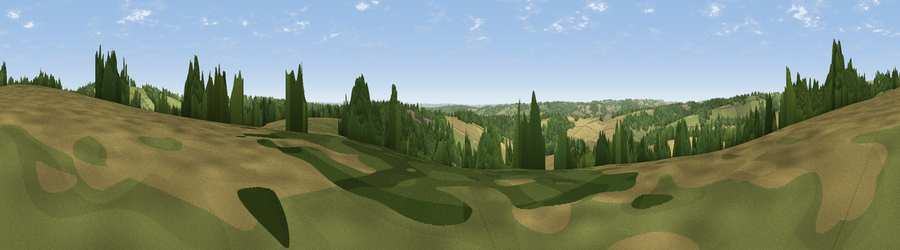

Viewpoint near Faccombe
#30693 in England · top 54% of its area beats it · near FaccombeThe view, rendered

A 360° render of this exact spot computed from the terrain model, tree cover and land cover — summer colours, afternoon light, calibrated against photographs of famous viewpoints. Real trees, hedges and buildings will differ in detail.
The panorama
Grey silhouette: terrain skyline in each direction (720 bearings, Earth curvature and refraction included). Dashed green: skyline with trees (+15 m) and buildings (+8 m) as obstacles. Blue strip: how far the ground is visible on each bearing.
Where the view opens
Wedge length = distance to the farthest visible ground on that bearing (vegetation-aware). Rings at 10, 25 and 50 km.
What fills the view
38% cropland · 31% woodland · 30% grassland ·
Angular shares of the visible panorama (visual magnitude), not map area. Landscape diversity 0.49 (0–1 Shannon).
Key numbers
More beautiful places nearby
The staircase of upgrades: each row has a higher view potential than everything closer. Driving times are estimates from straight-line distance, calibrated against real road routing — check an actual route before setting out.
| Place | Direction | Drive | Score |
|---|---|---|---|
| Viewpoint near Faccombe | N · 1 km | ~2 min | 53.7 |
| Viewpoint near East End | NE · 2 km | ~5 min | 69.4 |
| Walbury Hill | NNW · 3 km | ~7 min | 70.0 |
| Gallows Down | NNW · 4 km | ~9 min | 75.6 |
| Beacon Hill | ESE · 7 km | ~15 min | 76.7 |
| Martinsell viewpoint | WNW · 21 km | ~36 min | 77.3 |
| Viewpoint near Buriton | SE · 51 km | ~72 min | 80.0 |
| Beacon Hill | SE · 58 km | ~81 min | 85.8 |
51.32857, -1.44702 · source: screening · position refined by local search. Computed location — check access rights before visiting.